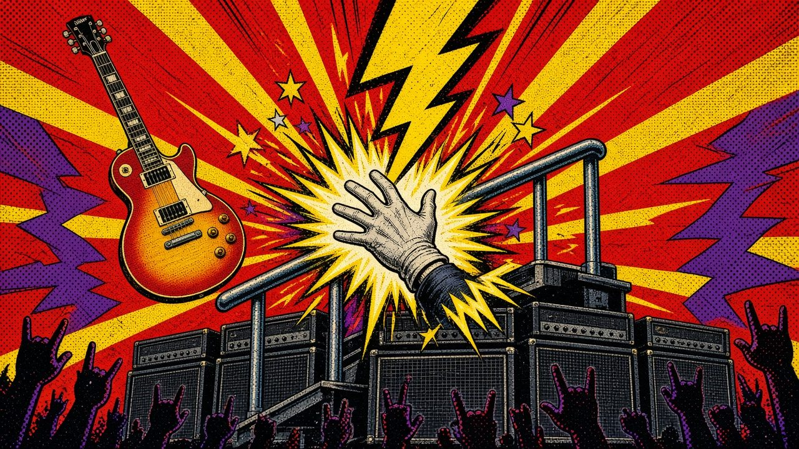

The night the stage tried to electrocute the Spaceman · Lakeland, Florida · 1976
Swipe, tap or use the arrow keys to read →
His bandmates told him to write a song about it. The result, “Shock Me” on 1977’s Love Gun, was the first KISS song Ace ever sang lead on.
He was so nervous that he recorded the vocal lying on his back in a darkened studio.
“I didn’t lie on my back to hit high notes — I did it because I was nervous and I didn’t want anybody to see me sing.”
Sources: KISS Concert History, 12/12/76 (with Rolling Stone and Tampa Bay Times reports) · Guitar Player: “I should have been dead” · Guitar.com: Ace Frehley’s wild Kiss moments · Wikipedia: “Shock Me” · KISS Concert History: “Shock Me” song story.
Often misdated to 1974; the concert records put it on 12 December 1976. Speech bubbles marked with a name are real, sourced quotes. Everything else is narration based on the sources above.
A non-commercial fan tribute to Ace Frehley (1951–2025). Not affiliated with KISS. Original art shows no likenesses, makeup designs or logos.